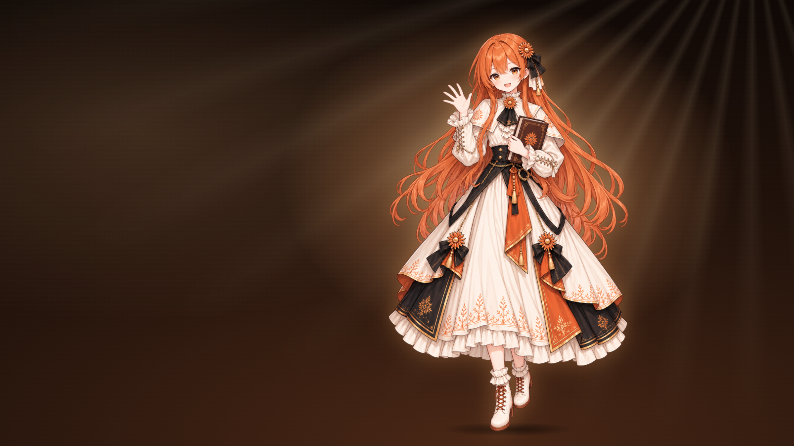

给第四幕换成会动的立绘视频
第四幕每次随机出现四种姿势之一（A 开书 · B 行礼 · C 回眸 · D 招手）。抽到哪种，就去找 assets/act4-<姿势>.mp4（比如 act4-d.mp4）：有就播视频，没有就用静态立绘。可以只给喜欢的姿势做视频。
1. 首帧
每种姿势各有一张首帧：keyframe-a.png ～ keyframe-d.png，就是动画第四幕的背景加对应立绘，构图已经对齐。生成哪种姿势的视频，就用哪张当首帧（也当尾帧）。

2. 用哪个工具（都能在国内直接用）
| 工具 | 怎么设 | 说明 |
|---|---|---|
| 即梦（Seedance 2.0） | 图生视频 → 首尾帧，两张都传同一张 keyframe；16:9、1080p、5–8 秒 | 二次元的头发、布料动得比较自然，首选 |
| 可灵 | 图生视频 → 首尾帧；运动幅度调低 | 人物一致性好；幅度开大了脸容易变 |
| 海螺 / 通义万相（Wan 2.2） | 图生视频，传首帧 | 可以拿来当备选、对比效果 |
| Colab Pro 自己跑 Wan 2.2 I2V | A100 上跑 14B 模型 | 本机 8 GB 显存 + 16 GB 内存装不下 14B 权重，不要在本机跑 |
首尾帧用同一张图，视频播完正好回到开头，循环播放时就看不出接缝。
3. 提示词
中文
二次元少女立绘，镜头完全固定不动。她安静地站着，轻轻呼吸，胸口和肩膀随呼吸起伏；长长的橙色头发和发梢被微风吹得缓缓飘动，裙摆和丝带轻轻摇曳；她慢慢眨一下眼，嘴角露出浅浅的微笑，怀里那本书的星芒封面微微发光。背景里的光束和浮尘缓缓流动。动作幅度很小，画风、脸和服装保持不变，像 Live2D 待机动画。English
Anime character illustration, locked-off static camera. She stands still and breathes softly, shoulders and chest rising gently; her long orange hair and its ends drift slowly in a light breeze, skirt and ribbons sway slightly; she blinks once and smiles faintly; the sun emblem on the book she holds glows softly. Light rays and dust motes drift in the background. Very subtle motion, consistent face, outfit and art style, Live2D-style idle loop.反向提示词（支持的工具填上）
镜头移动, 推拉摇移, 转身, 走动, 大幅度动作, 变脸, 换装, 多余的手指, 画风变化, 文字, 水印
一次只生成 5 秒左右的短片，挑最稳的那条。脸变了、手乱了的直接丢掉，别凑合。
4. 放进动画
- 导出 H.264 编码的 mp4（工具默认导出的就是）。
- 按姿势重命名为
act4-a.mp4～act4-d.mp4，放进项目的assets\文件夹。 - 如果装了 ffmpeg，建议无损重排一下，让文件头先加载（不装也能播）：
ffmpeg -i 原片.mp4 -c copy -movflags +faststart assets\act4-d.mp4
- 双击
splash.html预览，或者直接点快捷方式「Claude（小克动画版）」。
不想覆盖原文件的话，也可以在预览时加参数试别的片子：splash.html?pose=d&video=assets/试片.mp4（?pose= 固定姿势，方便对着看）
5. 素材来源
立绘是从网上找来的别人的作品，自己本地用没问题。如果以后要录屏发到公开平台，先确认作者是谁、能不能用。